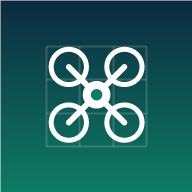

OrtoFlyCite o OrtoFly e o motor OpenDroneMap (ODM). A versão do ODM é a detectada quando você está conectado.
Texto pronto para a seção de Material e Métodos do seu trabalho. Revise e adapte (o app não substitui a responsabilidade técnica do autor).
O OrtoFly é gratuito. Se foi útil, considere apoiar via PIX.
Obrigado pelo apoio! Deixe sua avaliação.
🎉
Obrigado pela avaliação!
Sua opinião ajuda outros usuários a conhecer o app.
Documentos: Privacidade · Termos · Segurança · Acessibilidade